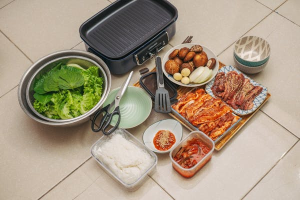

KOREAN CUISINE
Korean cuisine is largely based on rice, vegetables, seafood and (at least in South Korea) meats. Dairy is largely absent from the traditional Korean diet. Traditional Korean meals are named for the number of side dishes (반찬; 飯饌; banchan) that accompany steam-cooked short-grain rice. Kimchi is served at nearly every meal. Commonly used ingredients include sesame oil, doenjang (fermented bean paste), soy sauce, salt, garlic, ginger, gochugaru (pepper flakes), gochujang (fermented red chili paste) and napa cabbage.
Read More